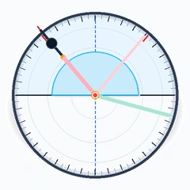

OL3D-HTML-MODULE v2.4
Bản bán trở thuỷ tinh & &Dstilde;á chia độ 360°
OL3D-EQP-SLB-0001
Tiêu chuẩn Thiết bị Dự án · SGK KHTN 9 (Bài 5 & 6) · Thông tư 38/2021/TT-BGD&Dstilde;T
✓ MODULE TỰ ĐỘNG KIỂM ĐỊNH THÀNH CÔNG: ĐẦY ĐỦ 4 KHỐI CHUẨN VÀ 7 CỔNG CHẤT LƯỢNG (OL3D-HTML-MODULE v2.4)
#manifest: OK
#icon: OK
#real-photo: OK
#3d-script: OK
1. Không gian 3D tương tác (Three.js WebGL)
0° Trực diện
45° Nghiêng
90° Bên hông
Kéo chuột để xoay 360° · Cuộn để phóng to/thu nhỏ
Góc tới chùm Laser i:
i = 40.0° (Khúc xạ)
0° (Vuông góc)
41.8° (Góc giới hạn igh)
90° (Là là mặt phẳng)
0.0° (Thẳng góc)
20.0° (Khúc xạ)
40.0° (Cận hạn)
41.8° (Tới hạn igh)
60.0° (PXTP)
2. Ảnh thực tế đối chiếu chuẩn TT38 (240x240)

Bản bán trụ thủy tinh quang học Crown BK7
• Bán kính: R = 48 mm, bề dày 20 mm
• Chiết suất nghiệm định: n = 1.50 ± 0.01
• Đĩa chia độ Hartmann kim loại: Ø 190 mm (ĐCNN 1°)
• Góc tới hạn phản xạ toàn phần: igh ≈ 41.8°
3. Nghiệm định Định luật Quang học (SGK KHTN 9)
•
Định luật khúc xạ:
$\sin r = n \cdot \sin i = 1.50 \cdot \sin i$ (khi tia sáng đi từ thủy tinh ra không khí).
•
Góc tới hạn:
$\sin i_{\text{gh}} = \frac{1}{n} = \frac{1}{1.50} \approx 0.6667 \implies i_{\text{gh}} \approx 41.81^\circ$.
•
Hiện tượng phản xạ toàn phần:
Khi $i \ge 41.8^\circ$, tia khúc xạ bị triệt tiêu hoàn toàn, toàn bộ năng lượng ánh sáng phản xạ trở lại bản bán trụ ($i' = i$).